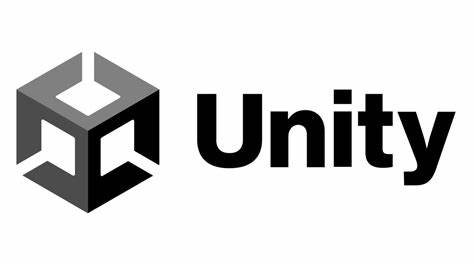
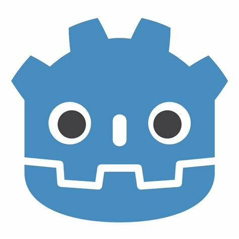

| HOME | Mi desarrollo en la programación |
||
En el pasado lo que yo estaba tratando de aprender era C# para poder utilizar unity pero, luego de lo que paso con el CEO de unity (Pedian mas porcentajes de dinero por usar su motor de videojuegos) decidi no tomar riesgos e irme por un programa un poquito mas sencillo de usar pero que se adaptaría a mis capacidades y lo ultimo que hice con unity fue un juego el cual presente en la feria tecnologica del año 2023 ganando el tercer lugar.
El programa que se adapta mejor a mis capacidades seria godot un motor de videojuegos fácil de aprender y de utilizar ya que utiliza una sintaxis muy similar a python, además el programa esta mas centrado en proyectos 2D los cuales para mi serian mas faciles de realizar que los de 3D.Además de eso godot es un motor de videojuegos al cual no le tienes que pagar por las cosas que creas si no que el motor de videojuegos una vez lo descargas es tuyo para realizar lo que tu quieras con el.
En un futuro no muy lejano si me gustaria aprender mas sobre el desarrollo 3D y multijugador online es por eso que yo empezaria por roblox studio el cual también tiene un lenguaje de programación sencillo que es el de LUA, ya con este programa yo empezaria a hacer mis primeros juegos los cuales me generen ganancias ya con un poquito mas de experiencia en el desarrollo de videojuegos.

Enlaces |
| Musica | / | Videojuegos | / | Programacion |